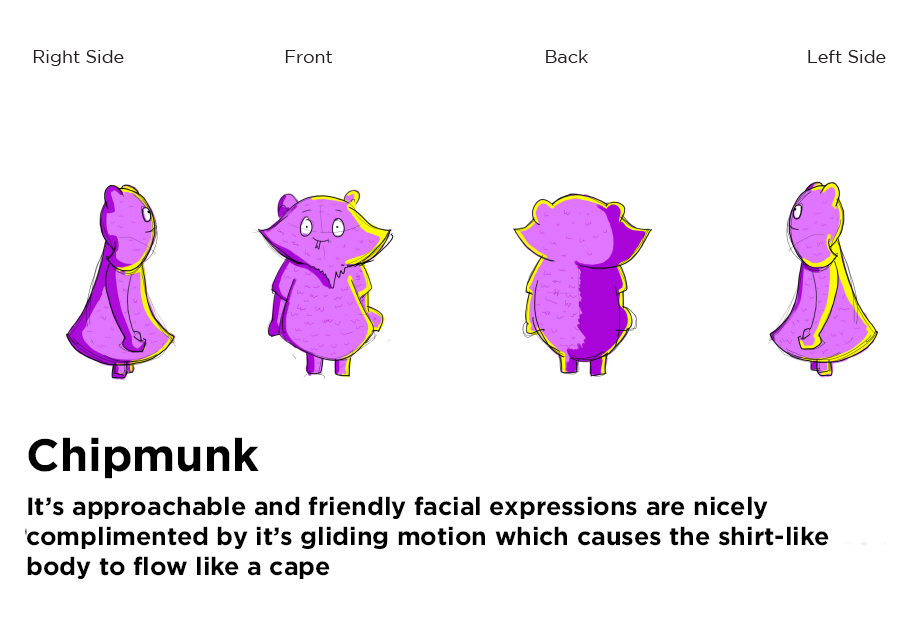
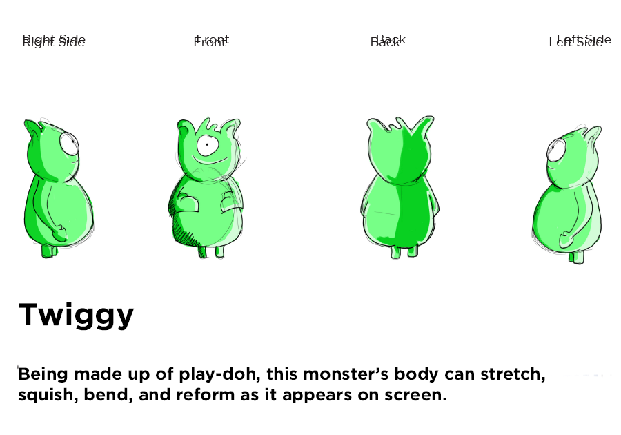
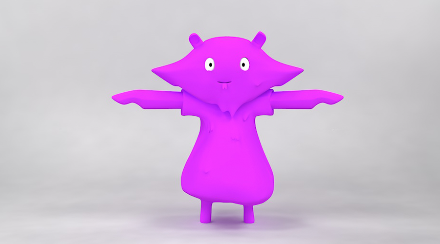
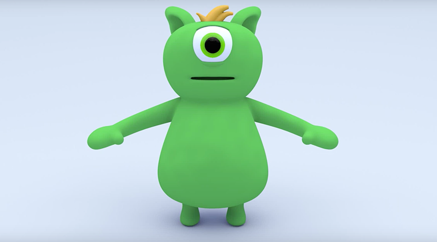

The Monster's Scene took almost a full year to complete from ideation to execution. There were so many moving parts and challenges to face. We had to invent, draw, model, rig and animate the characters each with their own personality. The aim of this game was to have children and guests walk by the wall and have their motion trigger the opening of doors and windows. Each character had a 'peek' animation, triggered by a user walking past the wall, as well as a 'pop' animation, trigger by users remaining in the same spot.
Breakdown sheets created by project manager Hunter French
 Twiggy (right) was modeled by team member Jared Fishler
 Both characters were rigged and animated by myself


This scene featured birds from around the world sitting on telephone wire. As people walked by the birds they passed would play an animation and chirp. Each bird also had an idle animation that would play every so often so the scene felt truly organic and alive.
The Matching Game was a simple concept that encouraged teamwork and communication. When one user highlighted a card and flipped it over another person would walk around flipping cards until they found the match. I created all of the iconography.